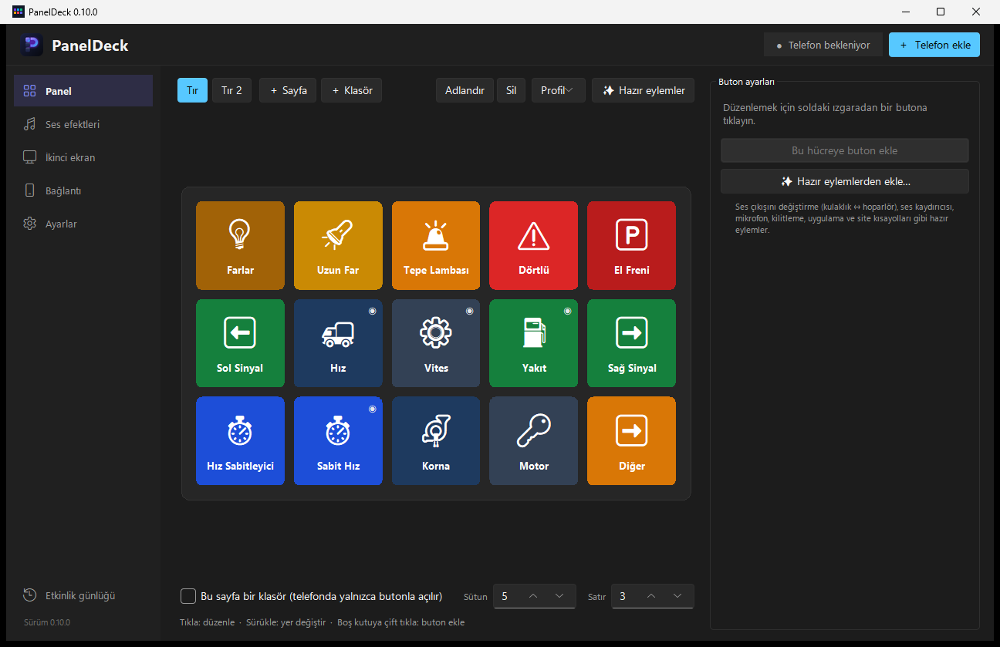

Telefonunu bilgisayarın için kontrol paneline çevir.
Turn your phone into a control deck for your PC.
Tek dokunuşla kısayollar, medya, OBS, Spotify, uygulama sesleri, Discord’a giden canlı ses değiştirici ve ikinci ekran. Donanım almadan, abonelik ödemeden.
One-tap shortcuts, media, OBS, Spotify, per-app volume, a live voice changer for Discord and a second screen. No hardware to buy, no subscription.

Kopmayan bağlantı
A connection that stays
USB kablosuyla, aynı Wi‑Fi’dan ya da mobil veriyle; bağlantı uçtan uca şifreli. Hesap yok.
Over a USB cable, the same Wi‑Fi or mobile data, end-to-end encrypted. No account.
Discord’a ses değiştirici
Voice changer for Discord
Canlı ses efektleri ve ses paneli arkadaşlarınıza gider; kurulum sihirbazı her şeyi ayarlar.
Live voice effects and a soundboard your friends hear; a setup wizard configures everything.
İkinci ekran
Second screen
Bilgisayarın ekranını telefonda izleyin, dokunarak fare ve klavye gibi kullanın.
Watch your PC screen on the phone and use it as a touch mouse and keyboard.
Yayıncı araçları
Streamer tools
OBS sahne, kayıt ve yayın; süreleri butonda. Spotify, uygulama sesi, Voicemeeter, Elgato ışığı.
OBS scenes, recording and streaming with timers on the button. Spotify, app volume, Voicemeeter, Elgato lights.
Oyunlar
Games
ETS2 / ATS: far, el freni, hız sabitleyici butonları oyundaki durumu ışıkla gösterir; hız, yakıt, vites canlı.
ETS2 / ATS: lights, parking brake and cruise buttons light up with the in-game state; live speed, fuel and gear.
Hazır düzenler
Ready layouts
Yayıncı, Oyuncu, Ofis… Tek tıkla başlayın; programların gerçek simgeleri otomatik gelir.
Streamer, Gamer, Office… Start in one click; real program icons are added automatically.
Neden PanelDeck?
Why PanelDeck?
| Stream Deck | Stream Deck Mobile | PanelDeck Pro | ||||
|---|---|---|---|---|---|---|
| Fiyat | Price | $100–150 | $2.99/ay | $2.99/mo | $4.99, bir kez | $4.99, once |
| USB kablo | USB cable | ✓ | ✗ | ✓ | ||
| Abonelik yok | No subscription | ✓ | ✗ | ✓ | ||
| Ses değiştirici + ikinci ekran | Voice changer + second screen | eklentiyle | with plugins | ✗ | ✓ |